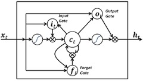

Earthquake Prediction using LSTM Neural Networks
Predicting future earthquakes using data of past earthquakes using Long Short Term Memory neural networks. The data is from IRIS.
Predicting future earthquakes using data of past earthquakes using Long Short Term Memory neural networks. The data is from IRIS.
Web Application built with MeteorJS and React to facilitate session based anonymous feedback from students to teachers. A list of MCQs based on the session formulated by the teacher and a text feedback form is available to the students. This will help the teacher to adapt his/her teaching methodologies to the students.
This is the main repository of srmconnect, a platform for SRM students (though the code is not SRM specific) to take advantage of the large community they are a part of.
Collects product details from Bigbasket ( all available cities ) and stores it in a MySQL database for data analysis. Product name, price, discount, categories, quantity, unit, brand and cityname are collected. A crawl delay of approx. 10 seconds is in place. Also includes a module to get and store each city's coordinates (latitude and longitude). Written in Python v3.
A web app built on NodeJS using a MongoDB database for people to track expenses. It's mainly for groups of people who share a common pool of money to keep track of how much is spent on what and by whom. Will include transaction history, verification, capabilities of common accounts.

Text based RPG game made in Java with swing. Players navigate through a dynamically generated dungeon, fighting monsters to survive.
Control of the character is done via text commands, eg. move left, heal, attack.
Made for College project.

A 2D platform game written in C++. Players play as a robot in a black and white world. They can change the background (primary color) of the world to reveal and hide (or bring into and out of existence ;) ) game objects.
Features include springs, ladders and different kinds of platforms.
Made for highschool project with friends.
Compiled with Turbo C++.

A simple 2D game made in C++. A ball falls vertically; the objective is to not let the ball fall off the screen by maneuvering onto platforms while dodging spikes.
Made for highschool project with friends.
Compiled with Turbo C++.

A version of the famous Pacman game made for highschool project in C++.
Compiled with Turbo C++.